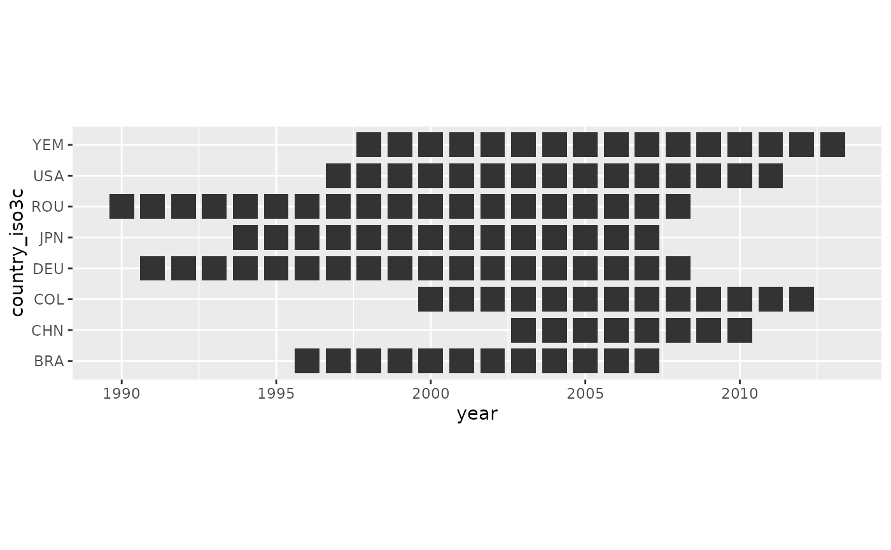

Extracting Crossmaps from Existing Scripts
Source:vignettes/extract-validate-existing.Rmd
extract-validate-existing.RmdMotivation
Many existing data harmonisation pipelines encode a crossmap’s
mapping logic implicitly, buried inside a legacy data-preparation script
rather than represented as an explicit, checkable table. This kind of
script is hard to audit: the mapping logic is scattered across many
conditional statements, and there is no single artefact that documents
which source codes map to which target category. This vignette walks
through extracting the mapping logic implied by such a
script into an explicit, validated xmap_tbl, without
needing to touch the original (possibly sensitive) data at all.
Case 1: Recoding & Aggregation
The opaque recoding script
Imagine you are given an existing project with a data harmonisation script:
use "C:\Users\Folder\input.dta", clear
gen farmer=0
replace farmer=1 if occupn>6000 & occupn<7000
gen teacher=0
replace teacher=1 if occupn>2400 & occupn<2500
gen professional=0
replace professional=1 if occupn>2000 & occupn<3000 & teacher==0
gen manager=0
replace manager=1 if occupn>1000 & occupn<1129
replace manager=1 if occupn>1131 & occupn<2000
gen armforces=0
replace armforces=1 if occupn<200
gen xefe=0
replace xefe=1 if occupn==1130
gen assprofclerk=0
replace assprofclerk=1 if occupn>3000 & occupn<5000
gen svcsales=0
replace svcsales=1 if occupn>5000 & occupn<6000
replace svcsales=1 if occupn>9000 & occupn<9200
gen labourer=0
replace labourer=1 if occupn>9200 & occupn<9320
gen driver=0
replace driver=1 if occupn>8320 & occupn<8330
replace driver=1 if occupn>9330 & occupn<9340
gen craftrademach=0
replace craftrademach=1 if occupn>7000 & occupn<9000 & driver==0
gen notclass=0
replace notclass=1 if occupn>9990 & occupn<10000You have access to the input data. Note the harmonisation index
variable occupn:
xmap::timor_occupn
#> # A tibble: 11,775 × 5
#> houseid pno p3p3_sex p3p4_age occupn
#> <dbl> <dbl> <chr> <dbl> <dbl>
#> 1 6.02e22 4 1. Male 20 110
#> 2 3.02e22 1 1. Male 40 110
#> 3 6.03e22 1 1. Male 40 110
#> 4 6.02e22 2 2. Female 24 110
#> 5 8.02e22 4 1. Male 28 110
#> 6 6.03e22 1 1. Male 35 110
#> 7 1.01e23 5 2. Female 23 110
#> 8 1.01e22 9 1. Male 28 120
#> 9 4.02e22 1 1. Male 39 140
#> 10 7.05e22 1 1. Male 62 140
#> # ℹ 11,765 more rowsYou are unable to run the original STATA script, but would like to reproduce the harmonised data in R, and examine the applied mappings. You are interested in knowing:
- if any
occupncodes in thetimor_occupndata were missed in the harmonisation process, leading to silent loss of observations - how many and which original
occupncodes were mapped to each replacement occupation (e.g.farmer,teacher, etc.)
These questions are not possible to answer from the input and output data alone, and it should be clear that parsing the script itself is quite difficult.
Recovering the mapping via carbon-paper substitution
The crossmaps framework offers a clear approach for extracting harmonisation logic from scripts. The basic idea is to pass “simplified data” through the script, and identify the mapping relationships based on the output. The simplified data can be thought of as ‘carbon paper’. To demonstrate this extraction process in this vignette, we first rewrite the logic from the STATA script in R (using a LLM):
recode_occupn <- function(occupn) {
df <- tibble::tibble(occupn = occupn)
df$farmer <- 0L
df$farmer[df$occupn > 6000 & df$occupn < 7000] <- 1L
df$teacher <- 0L
df$teacher[df$occupn > 2400 & df$occupn < 2500] <- 1L
df$professional <- 0L
df$professional[df$occupn > 2000 & df$occupn < 3000 & df$teacher == 0] <- 1L
df$manager <- 0L
df$manager[df$occupn > 1000 & df$occupn < 1129] <- 1L
df$manager[df$occupn > 1131 & df$occupn < 2000] <- 1L
df$armforces <- 0L
df$armforces[df$occupn < 200] <- 1L
df$xefe <- 0L
df$xefe[df$occupn == 1130] <- 1L
df$assprofclerk <- 0L
df$assprofclerk[df$occupn > 3000 & df$occupn < 5000] <- 1L
df$svcsales <- 0L
df$svcsales[df$occupn > 5000 & df$occupn < 6000] <- 1L
df$svcsales[df$occupn > 9000 & df$occupn < 9200] <- 1L
df$labourer <- 0L
df$labourer[df$occupn > 9200 & df$occupn < 9320] <- 1L
df$driver <- 0L
df$driver[df$occupn > 8320 & df$occupn < 8330] <- 1L
df$driver[df$occupn > 9330 & df$occupn < 9340] <- 1L
df$craftrademach <- 0L
df$craftrademach[df$occupn > 7000 & df$occupn < 9000 & df$driver == 0] <- 1L
df$notclass <- 0L
df$notclass[df$occupn > 9990 & df$occupn < 10000] <- 1L
df
}To form the ‘simplified data’ we extract the unique
occupn codes from the timor_occupn data:
(src_occupn <- unique(timor_occupn$occupn))
#> [1] 110 120 140 190 1110 1120 1130 1141 1142 1143 1210 1223 1224 1225 1226
#> [16] 1227 1231 1233 1239 1311 1314 1316 1317 2122 2131 2142 2143 2144 2145 2147
#> [31] 2221 2229 2231 2232 2316 2410 2421 2422 2431 2432 2440 2469 2511 2611 2612
#> [46] 2619 2922 2924 2933 2939 3112 3113 3114 3115 3119 3132 3151 3152 3212 3221
#> [61] 3222 3231 3232 3511 3513 3519 3911 3914 3919 3922 3924 3930 3952 4111 4115
#> [76] 4121 4122 4131 4190 4211 4212 4222 5112 5113 5121 5122 5123 5131 5132 5133
#> [91] 5134 5141 5149 5161 5162 5163 5169 5220 5230 6111 6112 6113 6114 6121 6122
#> [106] 6124 6129 6130 6141 6151 6152 6153 6154 6210 7111 7121 7122 7123 7124 7129
#> [121] 7136 7137 7141 7231 7232 7241 7323 7332 7411 7412 7414 7421 7422 7423 7432
#> [136] 7433 7436 8321 8322 8323 8324 8331 9111 9112 9113 9131 9132 9133 9141 9152
#> [151] 9161 9162 9211 9212 9213 9311 9312 9313 9331 9999 NAThen we can recover the transformation matrix by passing
src_occupn into recode_occupn():
(out_df <- recode_occupn(src_occupn))
#> # A tibble: 161 × 13
#> occupn farmer teacher professional manager armforces xefe assprofclerk
#> <dbl> <int> <int> <int> <int> <int> <int> <int>
#> 1 110 0 0 0 0 1 0 0
#> 2 120 0 0 0 0 1 0 0
#> 3 140 0 0 0 0 1 0 0
#> 4 190 0 0 0 0 1 0 0
#> 5 1110 0 0 0 1 0 0 0
#> 6 1120 0 0 0 1 0 0 0
#> 7 1130 0 0 0 0 0 1 0
#> 8 1141 0 0 0 1 0 0 0
#> 9 1142 0 0 0 1 0 0 0
#> 10 1143 0 0 0 1 0 0 0
#> # ℹ 151 more rows
#> # ℹ 5 more variables: svcsales <int>, labourer <int>, driver <int>,
#> # craftrademach <int>, notclass <int>The matrix shown is an adjacency matrix showing binary connections between occupation codes in the original data, and the replacement codes specified by the script.
Validating, building, and examining the crossmap
out_df already is an adjacency matrix — rows
keyed by occupn, columns by replacement occupation, cells
the (binary, here) weights — so we can check it’s a valid crossmap
directly with validate_as_xmap(). Trying that immediately
surfaces a real data issue:
occupn_matrix <- out_df |>
tibble::column_to_rownames("occupn") |>
as.matrix()
#> Error in `.rowNamesDF<-`:
#> ! missing values in 'row.names' are not allowedNote that out_df$occupn includes NA because
timor_occupn had observations whose original occupation
code was never classified. We can confirm this by looking at the
retrieved weights directly and noting there are no links – i.e. all
weights are 0:
out_df |> filter(is.na(occupn))
#> # A tibble: 1 × 13
#> occupn farmer teacher professional manager armforces xefe assprofclerk
#> <dbl> <int> <int> <int> <int> <int> <int> <int>
#> 1 NA 0 0 0 0 0 0 0
#> # ℹ 5 more variables: svcsales <int>, labourer <int>, driver <int>,
#> # craftrademach <int>, notclass <int>However, a matrix row can’t have a missing name, so
column_to_rownames() aborts. We drop the row explicitly
before validating the remaining links:
occupn_matrix <- out_df |>
tidyr::drop_na(occupn) |>
tibble::column_to_rownames("occupn") |>
as.matrix()
xmap::validate_as_xmap(occupn_matrix)
#> [1] TRUENow that validate_as_xmap() confirms
occupn_matrix is a valid crossmap, we can coerce it
directly into an xmap_tbl with as_xmap_tbl()’s
matrix method — no reshape to long format needed, and unlinked pairs
(weight = 0) are dropped automatically:
(occupn_xmap <- occupn_matrix |>
xmap::as_xmap_tbl(from = "occupn", to = "replacement"))
#> # A crossmap tibble: 160 × 3
#> # with unique keys: [160] occupn -> [12] replacement
#> .from$occupn .to$replacement .weight_by$cell
#> <chr> <chr> <int>
#> 1 110 armforces 1
#> 2 120 armforces 1
#> 3 140 armforces 1
#> 4 190 armforces 1
#> 5 1110 manager 1
#> 6 1120 manager 1
#> 7 1130 xefe 1
#> 8 1141 manager 1
#> 9 1142 manager 1
#> 10 1143 manager 1
#> # ℹ 150 more linksFrom the crossmap tibble, we can see that 160 unique
occupn codes are mapped into 12 replacement
occupations. To understand the mapping further, we can summarise the
weights to see that the original script only recodes and aggregates, but
never splits an existing occupn code into multiple
replacement codes.
Notice that distribution weights from the original
occupn codes are 1:
occupn_xmap |> group_by(.weight_by) |> count()
#> # A tibble: 1 × 2
#> # Groups: .weight_by [1]
#> .weight_by$cell n
#> <int> <int>
#> 1 1 160And all but two replacement categories
(notclass and xefe) are aggregations of
original occupn codes:
occupn_xmap |> group_by(.to) |> count()
#> # A tibble: 12 × 2
#> # Groups: .to [12]
#> .to$replacement n
#> <chr> <int>
#> 1 armforces 4
#> 2 assprofclerk 32
#> 3 craftrademach 24
#> 4 driver 5
#> 5 farmer 15
#> 6 labourer 6
#> 7 manager 18
#> 8 notclass 1
#> 9 professional 20
#> 10 svcsales 27
#> 11 teacher 7
#> 12 xefe 1Because the recoding script only ever assigns a source code to a
single target category, every link has a unit weight: this is a
many-to-one aggregation, not a redistribution. Summarising by target
category recovers, explicitly, the same grouping that was previously
implicit in the script’s if conditions — which source codes
were collapsed into each target category:
occupn_xmap |>
group_by(.to) |>
summarise(`.from$occupn` = glue::glue_collapse(.from, "+"))
#> # A tibble: 12 × 2
#> .to$replacement `.from$occupn`
#> <chr> <glue>
#> 1 armforces c("110", "120", "140", "190")
#> 2 assprofclerk c("3112", "3113", "3114", "3115", "3119", "3132", "3151", "3…
#> 3 craftrademach c("7111", "7121", "7122", "7123", "7124", "7129", "7136", "7…
#> 4 driver c("8321", "8322", "8323", "8324", "9331")
#> 5 farmer c("6111", "6112", "6113", "6114", "6121", "6122", "6124", "6…
#> 6 labourer c("9211", "9212", "9213", "9311", "9312", "9313")
#> 7 manager c("1110", "1120", "1141", "1142", "1143", "1210", "1223", "1…
#> 8 notclass 9999
#> 9 professional c("2122", "2131", "2142", "2143", "2144", "2145", "2147", "2…
#> 10 svcsales c("5112", "5113", "5121", "5122", "5123", "5131", "5132", "5…
#> 11 teacher c("2410", "2421", "2422", "2431", "2432", "2440", "2469")
#> 12 xefe 1130This crossmap can now be applied to real source-classification data
with apply_xmap(), checked into version control as a
documented artefact, or compared against a second, independently derived
crossmap for the same recoding — such as the original Stata
.do file traced on the same carbon copy — to check the two
agree.
Case 2: Recovering splits
Now imagine a more complex recoding function, extracted from a larger data preparation pipeline:
split_isiccomb <- function(threefour_df) {
#' Helper function to split isiccomb values across isic codes
#' @param threefour_df df with 3/4 digit values across isic & isiccomb
# make list for interim tables
interim <- list()
# extract rows with isiccomb codes
interim$isiccomb.rows <-
threefour_df %>%
filter(., str_detect(isiccomb, '[:alpha:]'))
# test that we are not losing any data through spliting
test_that("No `country,year` has more than one recorded `value` per `isiccomb` group", {
rows_w_many_values_per_isiccomb <-
interim$isiccomb.rows %>%
group_by(country, year, isiccomb) %>%
## get no of recorded (not NA) values for given `country, year, isiccomb`
summarise(n_obs = sum(!is.na(value))) %>%
filter(n_obs != 1) %>%
nrow()
expect_true(rows_w_many_values_per_isiccomb == 0)
})
# calculate average value over isiccomb group for each country, year
interim$isiccomb.avg <-
interim$isiccomb.rows %>%
# group isiccomb rows, replace na with 0 for averaging
group_by(country, year, isiccomb) %>%
mutate(value = tidyr::replace_na(value, 0)) %>%
# split combination value over standard isic codes in isiccomb group
summarise(
avg.value = mean(value),
## checking variables
n_isic = n_distinct(isic),
n_rows = n()
) %>%
mutate(row_check = (n_isic == n_rows))
# return(interim$isiccomb.avg)
## check n_isic == n_rows
test_that("isiccomb split average is calculated with correct denominator", {
expect_true(all(interim$isiccomb.avg$row_check))
})
# output processed data
final <-
left_join(
threefour_df,
interim$isiccomb.avg,
by = c('country', 'year', 'isiccomb')
) %>%
rename(value.nosplit = value) %>%
mutate(
value = coalesce(avg.value, value.nosplit),
split.isiccomb = !is.na(avg.value)
) %>%
select(country, year, isic, isiccomb, value, value.nosplit, split.isiccomb) # not checking variables
return(final)
}You might start by asking an LLM to explain what this code does. For example, this explanation was generated by Claude Sonnet 5:
This function handles a common problem in industrial classification data: source data sometimes reports a single value for a combined group of ISIC codes (e.g. a row where
isiccomb="311/312"covers two separate 3-digit ISIC classes) instead of reporting each code separately.split_isiccomb()disaggregates those combined values so every individualisiccode ends up with its own value.Step by step:
Identify combo rows — filters to rows where
isiccombcontains a letter (str_detect(..., '[:alpha:]')), which is presumably how combined codes are flagged (e.g. containing a suffix or separator letter rather than being purely numeric).Sanity check (test 1) — for each
country, year, isiccombgroup, asserts there’s exactly one non-NAvaluerecorded. This guards against silently averaging/splitting when multiple conflicting values exist for the same combo — the split logic assumes one reported total per group.Compute the split value — groups by
country, year, isiccomb, treatsNAas 0, and takesmean(value)across the group. Since (per test 1) there’s really only one non-zero value in the group, dividing byn()(the count ofisiccodes in that combo) effectively spreads the single reported total evenly across all the underlying ISIC codes — e.g. a value of 100 for"311/312"becomes 50 for311and 50 for312.Sanity check (test 2) — asserts
n_isic == n_rowsper group, i.e. no duplicateisiccodes within a combo group, so the denominator used for averaging is correct.Merge back — left-joins the averaged/split values onto the original data, keeps both the original (
value.nosplit) and split (avg.value) values, and usescoalesce()to prefer the split value where one exists, flagging which rows were split viasplit.isiccomb.In short: it’s a data-cleaning helper that turns “one value shared across a combo of ISIC codes” into “one value per individual ISIC code,” evenly divided, with two
testthatguards to make sure that even split is actually valid for the data at hand.
Still, this explanation doesn’t give much insight into which country, year observations contained combined values, and which ones didn’t. In order to understand which country, year observations this split procedure was actually applied to, we can again extract the weights by using ‘simplified data’.
To keep things simple, we will extract weights for only 8 countries,
across the years where data was available. Five are large-economy
reporters (USA, Japan (JPN), Germany (DEU), China (CHN) and Brazil
(BRA)); the other three (Colombian (COL), Romania (ROU) and Yemen (YEM))
are included because they exhibit structurally distinct splitting
behaviour, which we return to below. The
indstat$country_lookup table also carries an
income_group column (the World Bank’s 2006 historical
classification), which spans all four groups across these 8 countries.
We note that combined reporting is not a low-income-reporter
phenomenon.
indstat$masked_sample |>
nest_by(country_iso3c, year) |>
ggplot(aes(x = year, y = country_iso3c)) +
geom_tile(width = 0.8, height = 0.8) +
coord_fixed()
We provide a masked version of the data as
indstat$masked_sample, where the actual reported output
values have been masked and replaced with the value 1000.
In the original data, the correspondence between isic and
isiccomb is given in the same table as the reported output
value for each isiccomb code, with duplicated
rows for every isic code corresponding to a single
isiccomb code. This can be seen in the observation
country=276,year=1991 shown below. The value
for 151A is 1000 (masked), and the code covers
5 isic codes (151, 1520, 153, 154, 155):
indstat$masked_sample |>
filter(country_iso3c == "DEU", year == 1991) |>
filter(stringr::str_detect(isiccomb, '[:alpha:]'))
#> # A tibble: 50 × 11
#> ctable country year isic isiccomb value utable source unit country_iso3c
#> <dbl> <chr> <dbl> <dbl> <chr> <dbl> <dbl> <dbl> <chr> <chr>
#> 1 14 276 1991 151 151A 1000 13 1 $ DEU
#> 2 14 276 1991 1520 151A NA 13 1 $ DEU
#> 3 14 276 1991 153 151A NA 13 1 $ DEU
#> 4 14 276 1991 154 151A NA 13 1 $ DEU
#> 5 14 276 1991 155 151A NA 13 1 $ DEU
#> 6 14 276 1991 171 171A 1000 13 1 $ DEU
#> 7 14 276 1991 172 171A NA 13 1 $ DEU
#> 8 14 276 1991 1730 171A NA 13 1 $ DEU
#> 9 14 276 1991 1810 1810A 1000 13 1 $ DEU
#> 10 14 276 1991 1820 1810A NA 13 1 $ DEU
#> # ℹ 40 more rows
#> # ℹ 1 more variable: country_name <chr>The structure of the original data further complicates understanding
how the split-up isic values were calculated. To extract
the splitting weights, we pass the masked data to the splitting
function:
split_links <- indstat$masked_sample |>
split_isiccomb() |>
mutate(weights = value / 1000) |>
tidyr::drop_na(weights)
#> `summarise()` has regrouped the output.
#> ℹ Summaries were computed grouped by country, year, and isiccomb.
#> ℹ Output is grouped by country and year.
#> ℹ Use `summarise(.groups = "drop_last")` to silence this message.
#> ℹ Use `summarise(.by = c(country, year, isiccomb))` for per-operation grouping
#> (`?dplyr::dplyr_by`) instead.
#> Test passed with 1 success 🥇.
#> `summarise()` has regrouped the output.
#> ℹ Summaries were computed grouped by country, year, and isiccomb.
#> ℹ Output is grouped by country and year.
#> ℹ Use `summarise(.groups = "drop_last")` to silence this message.
#> ℹ Use `summarise(.by = c(country, year, isiccomb))` for per-operation grouping
#> (`?dplyr::dplyr_by`) instead.
#> Test passed with 1 success 🎊.Note that we are able to interpret the retrieved links purely as
redistribution splits because of the structure of the initial function
split_isiccomb() and the fact that no two
isiccomb codes cover the same isic code in a
given year. We drop unlinked combinations of isic and
isiccomb, i.e. links with weight==NA, since
they will not be involved in any data transformations.
Validating grouped links
Once we have extracted the redistribution weights, we might be
interested in validating that the weights form a valid crossmap, such
that we are guaranteed that the total value across categories before and
after the split are identical for each country, year observation. We can
use the validate_as_xmap() function to quickly and cheaply
check conditions for a valid crossmap – i.e. no duplicate pairs, missing
weights, and that outgoing weights from each source sum to one.
group_diagnoses <- split_links |>
nest_by(country, year, .key = "links") |>
mutate(valid = validate_as_xmap(links, isiccomb, isic, weights))
group_diagnoses |> head()
#> # A tibble: 6 × 4
#> # Rowwise: country, year
#> country year links valid
#> <chr> <dbl> <list<tibble[,6]>> <lgl>
#> 1 076 1996 [60 × 6] TRUE
#> 2 076 1997 [60 × 6] TRUE
#> 3 076 1998 [60 × 6] TRUE
#> 4 076 1999 [60 × 6] TRUE
#> 5 076 2000 [60 × 6] TRUE
#> 6 076 2001 [60 × 6] TRUEWe can confirm that all the extracted weights form valid crossmaps for each country, year observation.
group_diagnoses |>
count(valid)
#> # A tibble: 112 × 4
#> # Rowwise: country, year
#> country year valid n
#> <chr> <dbl> <lgl> <int>
#> 1 076 1996 TRUE 1
#> 2 076 1997 TRUE 1
#> 3 076 1998 TRUE 1
#> 4 076 1999 TRUE 1
#> 5 076 2000 TRUE 1
#> 6 076 2001 TRUE 1
#> 7 076 2002 TRUE 1
#> 8 076 2003 TRUE 1
#> 9 076 2004 TRUE 1
#> 10 076 2005 TRUE 1
#> # ℹ 102 more rowsInvalid diagnosis
To illustrate the case of an invalid crossmap, and locate problematic links or weights, let us modify a random weight to create an invalid link.
set.seed(352)
mod_links <- split_links
mod_position <- sample(seq(1, nrow(split_links)), 1)
mod_links$weights[mod_position] <- 0.9Instead of validate_as_xmap(), we can use
diagnose_as_xmap_tbl() which in addition to validating the
basic conditions of a crossmap, also return additional diagnostics
whenever a condition fails. Running diagnose_as_xmap_tbl()
we get find three invalid crossmaps:
invalid_diagnoses <- mod_links |>
group_by(country, year) |>
group_map(\(group_df, group_key) {
diagnosis <- diagnose_as_xmap_tbl(group_df, isiccomb, isic, weights)
bind_cols(
group_key,
tibble::tibble(
data = list(group_df),
valid = diagnosis$valid,
diagnosis = list(diagnosis)
)
)
}) |>
bind_rows()
invalid_diagnoses |>
filter(!valid)
#> # A tibble: 1 × 5
#> country year data valid diagnosis
#> <chr> <dbl> <list> <lgl> <list>
#> 1 170 2003 <tibble [135 × 6]> FALSE <xmp_dgn_>Filtering allows us to locate which country, year the invalid link affects, while the diagnosis object helps us locate the exact link:
bad_group <- invalid_diagnoses |>
filter(!valid)
bad_group$diagnosis[[1]]$details
#> $bad_dups
#> NULL
#>
#> $miss_from
#> NULL
#>
#> $miss_to
#> NULL
#>
#> $miss_weight_by
#> NULL
#>
#> $nonpositive_weights
#> NULL
#>
#> $bad_froms
#> # A tibble: 1 × 2
#> .from$isiccomb .sum.weight_by
#> <chr> <dbl>
#> 1 3699 0.9
bad_group$data[[1]] |>
filter(isiccomb %in% bad_group$diagnosis[[1]]$details$bad_froms$.from)
#> # A tibble: 1 × 6
#> isic isiccomb value value.nosplit split.isiccomb weights
#> <dbl> <chr> <dbl> <dbl> <lgl> <dbl>
#> 1 3699 3699 1000 1000 FALSE 0.9